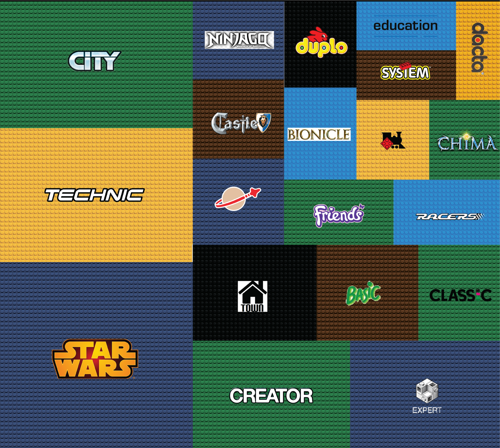

Hey, you! This is my latest project. Wanna see my previous ones? Click here and find out what it means to live in one of the world's most seismically active countries.
[Who is this guy again?]
___________________________________
Lobbying in the EU
Who are the most active EU lobbyists?
BY Nikos Pitsiladis
Published Aug 14, 2018
Lobbying at the European Union level is increasingly a part of the political decision-making process and thus part of the legislative process.
Where does the data come from?
LobbyFacts is a one-stop-shop of data on EU lobbying in Brussels. Using data drawn, in real time, from the official EU lobby transparency register and the Commission’s published lists of its high-level lobby meetings, LobbyFacts brings together data on lobby spend and turnover; numbers of lobbyists and European Parliament pass-holders; high-level Commission meetings held; country of origin; issues lobbied on; and other info. It offers an extensive dataset on lobbying in the EU, along with a real-time updating API.
The big picture
Private Companies, Trade and business associations, NGOs, Consulting groups and Think tanks are the main lobbyists' categories. How much are they spending on lobbying? Hover over the chart and find out.
Trade and Business Associations
Non-Governmental Organisations
Professional Consultancies
Think Tanks and Research Institutions
Private Companies and Groups
SOURCE: Lobbyfacts.eu
What if LEGO prices vary a lot per set?
Many will argue that the average price is not an accurate index, as various sets with various prices may be launched each year. Therefore, we are putting the median price to the test.

SOURCE: Brickset.com
The answer lies in the individual sets.
Although LEGOs are not getting more expensive, but quite the oposite as our analysis showed, notice how 16 out of the top 20 most expensive sets of all times have been launched after 2002.
Top 20 most expensive sets of all times
So how much would you spend on a LEGO set?

SOURCE: Brickset.com
AFOLs and new challenges
As years have passed and more that 15.000 sets have been launched, the company is obviously looking for ways to make the models more and more challenging and of course add more detail. So it comes as no surprise that LEGO sets feature more and more bricks as years pass. And then there's the AFOLs, or adult LEGO fans, who can spend and demand more and more from their favorite brand.
Cheaper and with more bricks!
Average number of bricks per set, per decade. LEGO is adding more detail to the sets as years pass.

NOTE: Data has been normalized to correctly portray the 1960's (3 years) and 2010's (7 years).
SOURCE: Brickset.com
60 years of LEGO themes.
Here are the top 30 themes in terms of bricks per set. Just imagine that more than 250.000 bricks have been included in the various Star Wars sets.

SOURCE: Brickset.com